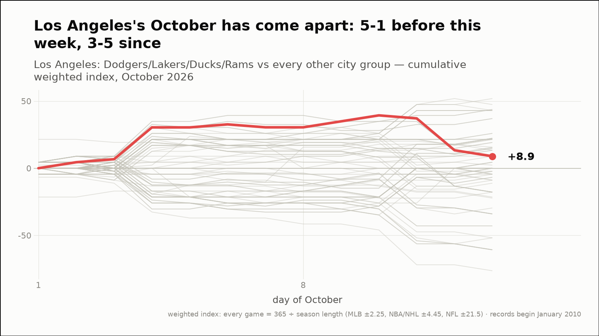
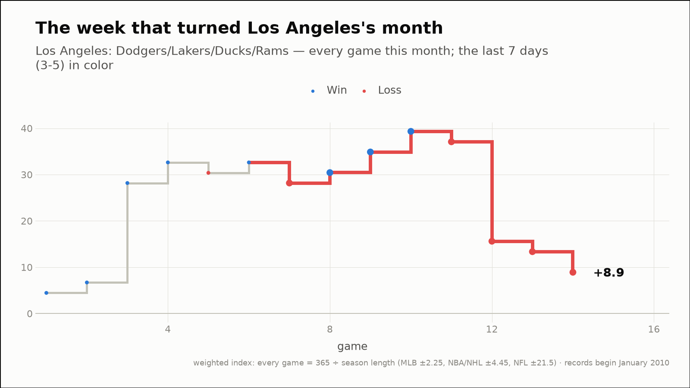
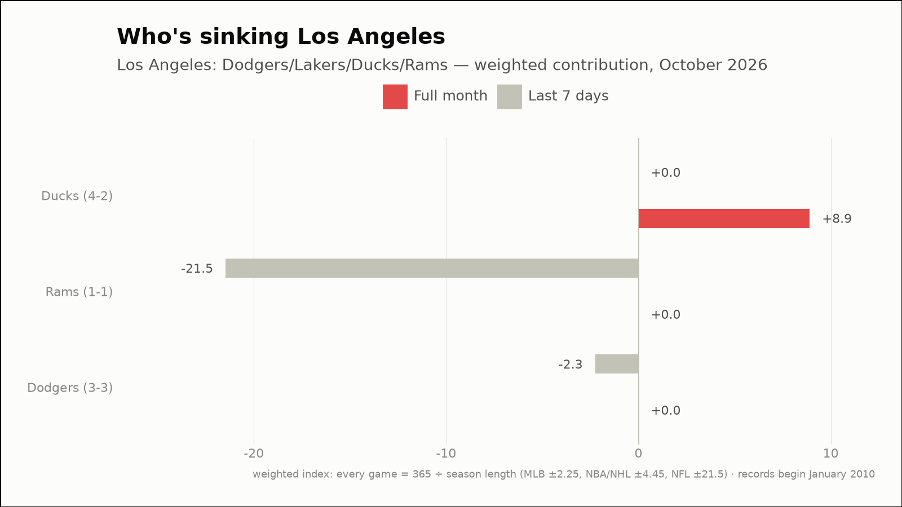
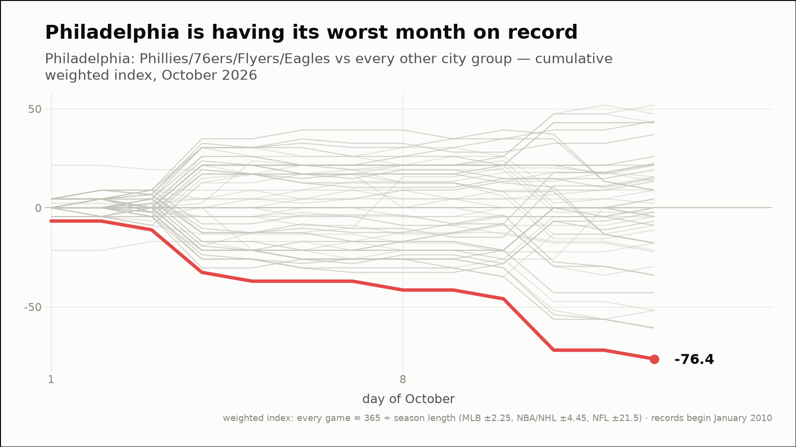
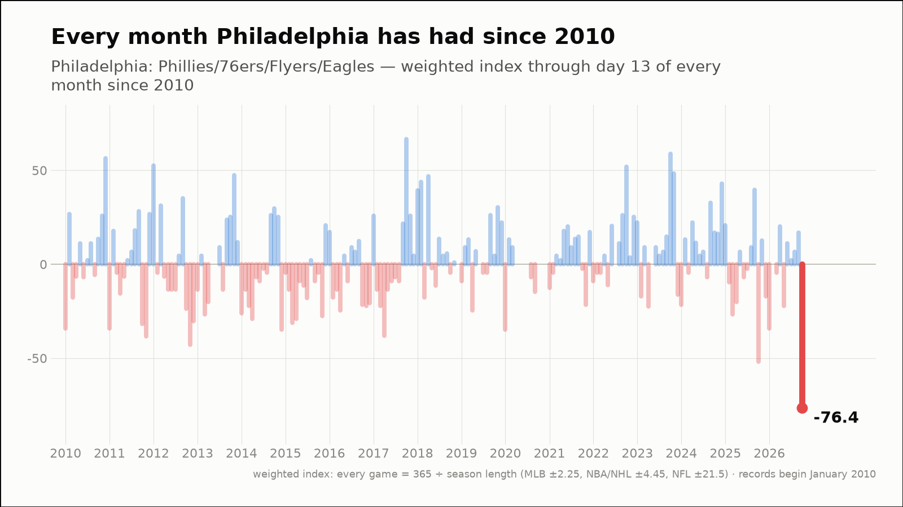
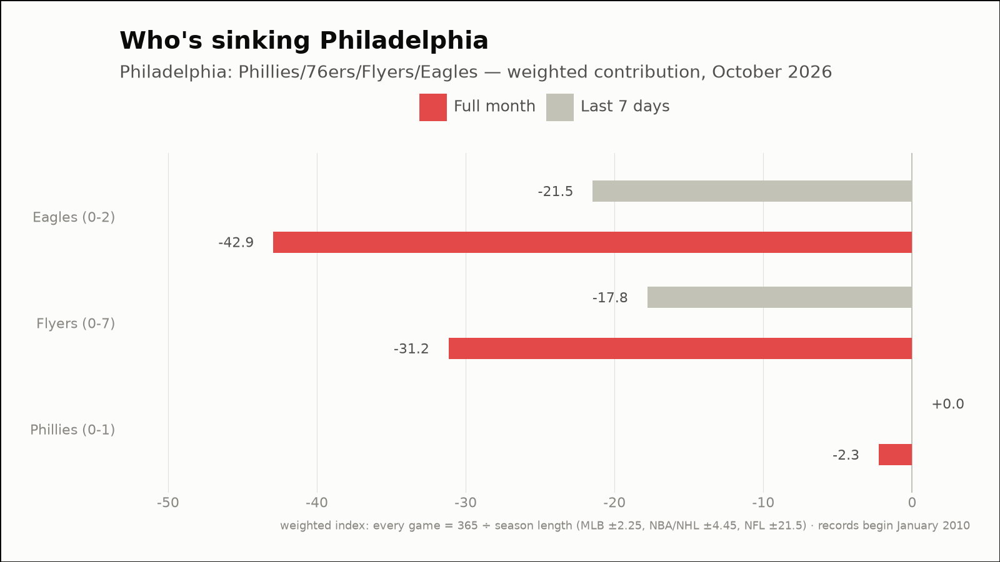
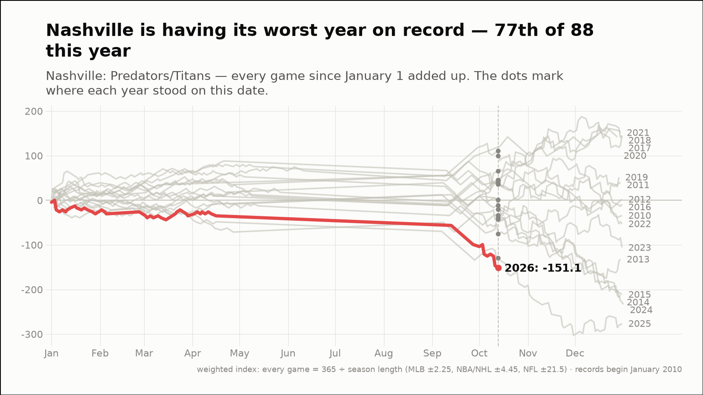
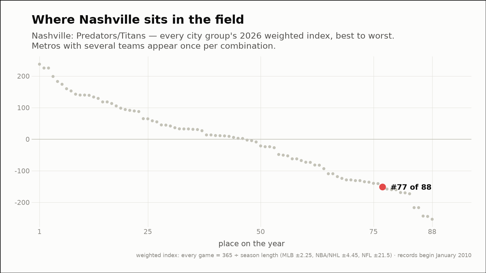

Out of the norm — three fandoms off their own script
The weekly hunt across all 88 city groups, through October 13, 2026
Los Angeles's October has come apart: 5-1 before this week, 3-5 since
Los Angeles: Dodgers/Lakers/Ducks/Rams
- Before this week
- 5-1, +32.6 weighted (+5.44 per game)
- Since
- 3-5, -23.7 weighted (-2.97 per game)
- This month (through October 13)
- 8-6, +8.9 weighted
- Last 7 days
- 3-5, -23.7 weighted
- Driving it this week
- Rams (0-1, -21.5)



Philadelphia is having its worst month on record
Philadelphia: Phillies/76ers/Flyers/Eagles
- This month (through October 13)
- 0-10, -76.4 weighted — the worst of 195 months on record (0th percentile)
- vs past Octobers
- the worst October of the 16 on record
- Last 7 days
- 0-5, -39.3 weighted
- Driving it this week
- Eagles (0-1, -21.5)
- Active streaks
- Flyers L8, Eagles L3



Nashville is having its worst year on record — 77th of 88 this year
Nashville: Predators/Titans
- 2026 so far (through October 13)
- 22-33, -151.1 weighted — the worst of the 17 years on record, at the same point
- Against the field
- 77th of 88 city groups on the year (13th percentile)
- This month (through October 13)
- 2-6, -51.8 weighted
- Last 7 days
- 1-3, -25.9 weighted
- Driving it this week
- Titans (0-1, -21.5)
- Active streaks
- Titans L5

